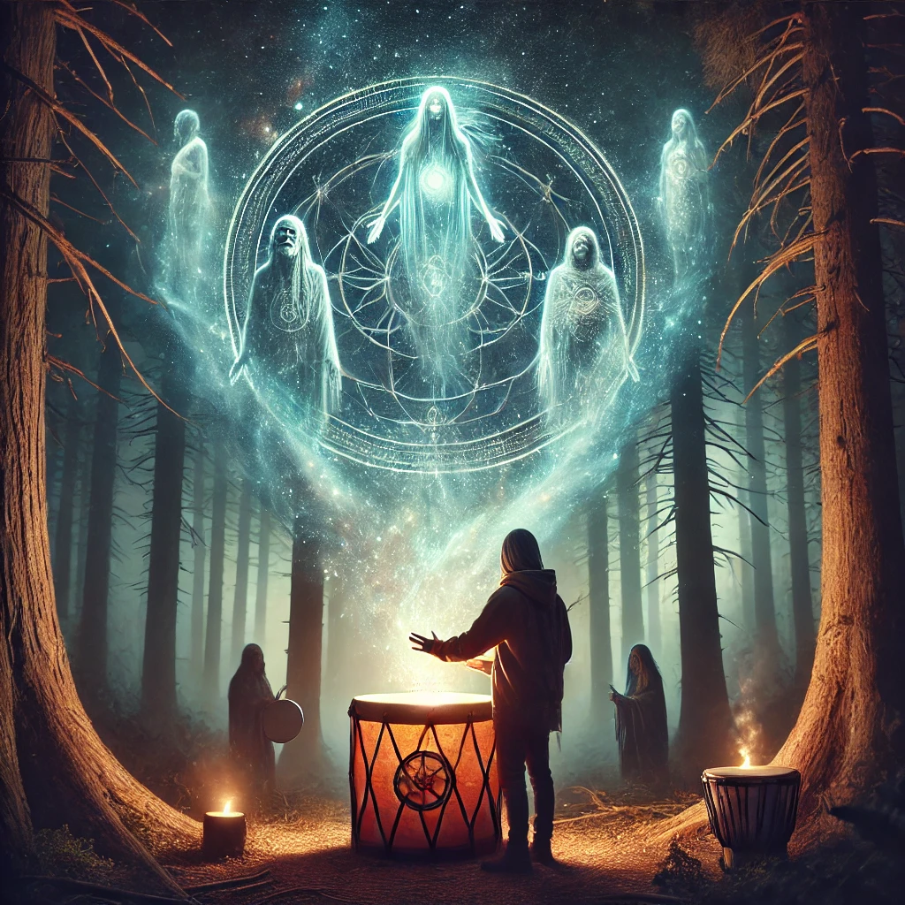

You reach out and grasp the ceremonial drum. Its surface glows faintly, adorned with ancient symbols that seem to shift as you look closer. The moment your hands touch it, a deep, resonant hum vibrates through your body, grounding you in the present yet connecting you to something ancient and infinite.
“This is the Drum of Earth’s Spirits,” the being intones. “Its rhythm calls to the wisdom of your ancestors and the energies of the land. To play it is to summon guidance and healing, but the journey it begins may not be an easy one.”
Taking a deep breath, you strike the drum with your palm. The sound reverberates around you, and the forest transforms. Shadows shift, revealing ethereal figures of shamans and ancestors who step forward, their voices chanting in harmony with the drum’s rhythm. They encircle you, their eyes wise and knowing, as they offer the Medicine Wheel:
“Your journey is not linear—it spirals like the galaxies above. Learn to walk the wheel, and you will heal both yourself and the world around you.”
The vision fades, leaving you with the drum in your hands and a profound sense of connection.

How will you proceed?